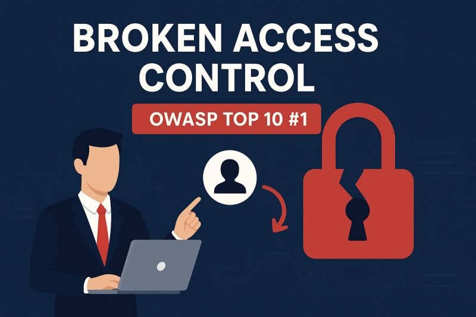

ABOUT ME SOBRE MIM
Valentim Loth Simão Prado
Pentester and Security Researcher focused on web applications, APIs, and Application Security, with hands-on experience in identifying and responsibly reporting vulnerabilities, including collaboration with the U.S. Department of Defense.
Pentester e Pesquisador de Segurança focado em aplicações web, APIs e segurança de aplicações, com experiência prática em identificar e reportar vulnerabilidades de forma responsável, incluindo colaboração com o Departamento de Defesa dos EUA.
SKILLS
HABILIDADES
Web Exploitation
Recon & OSINT
Network
Linux
API Hacking
Python
SQL
PHP
Laravel
JS
Bash
Metasploit
Burpsuite
Nmap
Git
SECURITY REPORTS SUBMITTED TO
EMPRESAS COM RELATÓRIOS ENVIADOS
TOTAL REPORTS SUBMITTED
TOTAL DE RELATÓRIOS ENVIADOS
Responsible Disclosure Across Multiple Programs
Divulgação Responsável em Diversos Programas
ACHIEVEMENTS
CONQUISTAS
DoD Cybercrime Center - Researcher of the Month (August 2025)
Centro de Crimes Cibernéticos do Departamento de Defesa dos Estados Unidos - Pesquisador do Mês (Agosto 2025)
Received a Certificate of Recognition from the U.S. Department of Defense Vulnerability Disclosure Program (DIB-VDP) as Researcher of the Month (August 2025) for identifying and responsibly disclosing an Insecure Direct Object Reference (IDOR) vulnerability in an account update endpoint. The flaw allowed an attacker with knowledge of a victim’s email address to modify account details without proper authorization checks.
Recebeu um Certificado de Reconhecimento do Programa de Divulgação de Vulnerabilidades do Departamento de Defesa dos EUA (DIB-VDP) como Pesquisador do Mês (Agosto 2025) por identificar e divulgar de forma responsável uma vulnerabilidade de Referência Insegura a Objetos Diretos (IDOR) em um endpoint de atualização de conta. A falha permitia que um atacante com conhecimento do endereço de e-mail de uma vítima modificasse detalhes da conta sem as devidas verificações de autorização.

PROJECTS
PROJECTOS
VPScanner - Automated Recon Script
VPScanner is a fully automated reconnaissance script designed for bug bounty hunters and penetration testers. It performs:
- Subdomain enumeration (subfinder, sublist3r, assetfinder, findomain, amass and crt.sh)
- Alive subdomain detection (httpx)
- Screenshots of alive subdomains (gowitness)
- Wayback URL collection & filtering (gau, uro)
- Sensitive file/URL detection (ripgrep)
- GF pattern filtering (gf)
- Hakrawler fuzzing for additional URLs
- Optional port scanning (naabu)
VPScanner – Script Automatizado de Reconhecimento
O VPScanner é um script de reconhecimento totalmente automatizado, desenvolvido para bug bounty hunters e pentesters. Ele executa:
- Enumeração de subdomínios (subfinder, sublist3r, assetfinder, findomain, amass e crt.sh)
- Detecção de subdomínios ativos (httpx)
- Captura de screenshots de subdomínios ativos (gowitness)
- Coleta e filtragem de URLs do Wayback (gau, uro)
- Detecção de arquivos/URLs sensíveis (ripgrep)
- Filtragem por padrões GF (gf)
- Fuzzing com Hakrawler para descoberta de URLs adicionais
- Varredura de portas opcional (naabu + nmap)
BugHunting Framework - Notion
Notion workspace compiles hours of practical security research and bug hunting experience — an operational playbook with detailed checklists, payloads, and proof-of-concepts. It includes:
- Checklists by vulnerability type and testing flows (XSS, IDOR, CSRF, SSRF, authentication flaws, race conditions)
- Collections of tools and commands (Burp Suite, Turbo Intruder, nmap, amass, httpx, etc.)
- Payloads and reusable templates, organized by vector
- Reconnaissance and enumeration workflows (subdomains, crawling, fuzzing, screenshots)
- Curated links to labs, reports, and learning resources
- Report templates and best practices for responsible disclosure
Framework de Bug Hunting – Notion
O workspace do Notion compila horas de pesquisa prática em segurança e experiência em bug hunting — um manual operacional com checklists detalhados, payloads e proof-of-concepts. Inclui:
- Checklists por tipo de vulnerabilidade e fluxos de teste (XSS, IDOR, CSRF, SSRF, falhas de autenticação, race conditions)
- Coleções de ferramentas e comandos (Burp Suite, Turbo Intruder, nmap, amass, httpx, etc.)
- Payloads e templates reutilizáveis, organizados por vetor
- Fluxos de reconhecimento e enumeração (subdomínios, crawling, fuzzing, screenshots)
- Links selecionados para labs, reports e recursos de aprendizado
- Templates de relatório e melhores práticas para Responsible Disclosure
Projects - Write-Ups
Projetos – Relatórios
IDOR in Account Update Endpoint
IDOR em Endpoint de Atualização de Conta
JWT usage does not inherently prevent IDOR vulnerabilities
O uso de JWT não previne inerentemente vulnerabilidades de IDOR
Business Logic Flaw Allowing Unauthorized Trial Extension
Falha de Lógica de Negócio Permitindo Extensão de Trial Não Autorizada

Understanding business workflows is critical to identifying logic flaws
Entender fluxos de negócio é crítico para identificar falhas de lógica